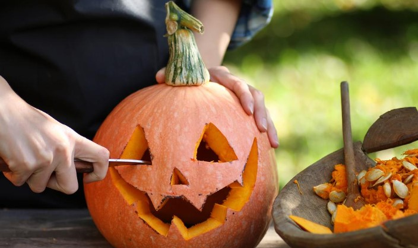
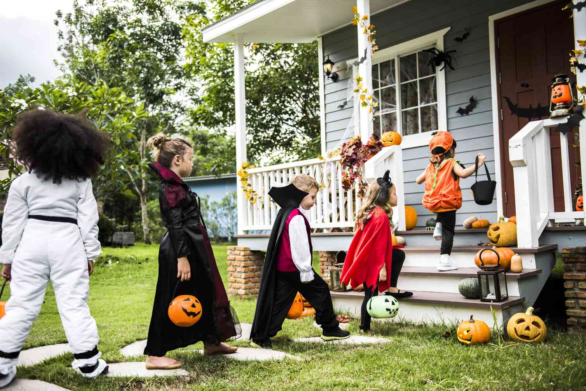
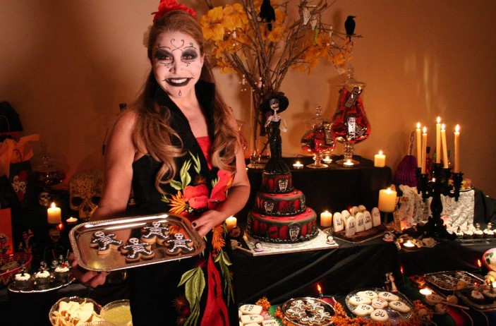

Carving pumpkins for Halloween is a tradition that originates from an ancient Irish legend and folklore. The practice stems from the story of "Stingy Jack," a man who tricked the devil several times and, as a result, was doomed to wander the Earth with only a burning coal inside a hollowed-out turnip to light his way. Irish people would carve scary faces into turnips or potatoes to ward off Jack's wandering spirit and other evil entities. When Irish immigrants came to the United States in the 19th century, they found pumpkins, which were larger and easier to carve than turnips. Over time, the practice of carving pumpkins, or "jack-o'-lanterns," became associated with Halloween and evolved into the fun, creative tradition we know today, with people carving a variety of designs to decorate their homes. The tradition ties into the overall theme of Halloween, which celebrates the supernatural, with jack-o'-lanterns meant to scare away evil spirits.
Carving a Jack-o-Lantern
Trick or Treat!
Trick-or-treating is a fun Halloween tradition where children dress up in costumes and go door-to-door in their neighborhoods, usually in the evening. They knock on doors or ring doorbells and say "Trick or treat!" The homeowners then give the children candy or small treats. It's a playful way to celebrate Halloween, with the idea being that if they don't get a treat, the children might play a harmless "trick," though this rarely happens!
Halloween Parties
Halloween parties can be for kids or adults. They are meant to celebrate the holiday in a fun and spooky way. Some activies at Halloweeen parties are:
- Costume Contests: Guests dress up in creative costumes, and the best ones win prizes.
- Bobbing for Apples: A game where players try to grab floating apples from a tub of water using only their mouths.
- Scavenger Hunts:A spooky-themed search for hidden items around the party area.